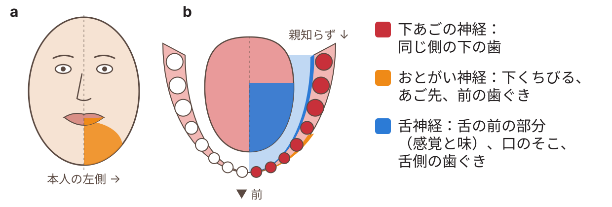

うまっている下の親知らずと、そのそばを通る神経
下は、左の下あごの3Dモデルです。一部のスマートフォンやタブレットでは、AR（拡張現実）でも見られます。ARは、カメラにうつる実際の部屋の中に、モデルがあるように見せる機能です。
ドラッグで回転、ピンチで拡大・縮小できます。番号の点をタップすると、その部分の説明が出ます。番号を消すで、モデルを見やすくできます。AR表示をタップすると、近くの机の上や平らな場所にモデルを置けます。
ARは、ARに対応した機器とブラウザでだけ使えます。たとえば、iPhone・iPadのSafariや、多くのAndroidスマートフォンのChromeです。ARのボタンが出ないときは、その機器やブラウザではARを使えません。iPhoneでは、AR画面の上の「オブジェクト」をタップすると、モデルをどの向きにも回せます。
- あごの骨と歯
- 神経・動脈・静脈（下あごの管の中）
一人一人、ちがいます
歯の形、神経の位置、危険の大きさは、人によって大きくちがいます。ここにあるのは、多くの人に向けた情報で、一人一人への助言ではありません。どの治りょうでも、始める前に、歯医者さんや口の手術の先生が、一人一人と、利点・危険・ほかの方法について、くわしく話し合います。
どんな状態ですか？
親知らずは、いちばんおくにある歯です。「第三大きゅう歯」ともよびます。うまっている下の親知らずは、歯ぐきと骨の下にあり、歯ぐきの上に出ていません。正しい向きに生えることができません。
神経について
下あごの骨の中には、細い管があり、その中を神経が通っています。ここでは「下あごの神経」とよびます。医学での名前は「かしそう神経」です。同じ管の中を、2本の血管（かしそう動脈とかしそう静脈）もいっしょに通っています。1
下あごの神経は、顔の感覚を伝える大きな神経「三さ神経」の枝です。三さ神経の3つの大きな部分のうち、いちばん下の部分（かがく神経）から出ています。神経・動脈・静脈は、舌側にある小さなあな（かがくこう）から、あごの骨に入ります。1 このあなの前のふちにある、小さなとがった骨を「小舌」といいます。2
下あごの神経は、同じ側の下の歯と歯ぐきの感覚を伝えています。3 あごの前の方で、この神経の枝が、骨の小さなあなから外に出ます。この枝を「おとがい神経」とよびます。下くちびるとあごの感覚を伝えています。4
舌の感覚は、別の神経（舌神経）が伝えています。舌神経も、親知らずをぬくときに傷つくことがあります。5 舌神経の傷がずっと続くことはまれで、1000人に1〜3人ほどです。6 このモデルでは、舌神経は表していません。
このモデルでは、親知らずの根が、神経と動脈に巻き付いています。
歯をぬくと、なぜ神経が傷つくことがあるのですか？
歯をぬくには、根を骨から取り出す必要があります。根は、神経を囲むように曲がっています。そのため、根を取り出すときに、神経がおされたり、のびたり、切れたりすることがあります。いっしょに通る動脈や静脈が傷ついて、血が出ることもあります。1
下あごの神経が傷つくと、その枝のおとがい神経もうまく働かなくなることがあります。4
神経が傷つくと、どうなりますか？
同じ側の下くちびる、あご、歯、歯ぐきに、次のようなことが起こります。3
- しびれる（感覚がにぶくなる）
- ピリピリ、チクチクする
- 感じ方がいつもとちがう
- いたむ。軽くふれただけでいたむこともある。5

くちびるや顔は、今までどおり動かせます。3
一時的な場合：感覚はもどります。多くは、数週間から数か月かかります。3
ずっと続く場合：感覚が完全にはもどりません。3
年れい：24才くらいより上の人では、神経が傷つきやすくなります。3 年れいが高いほど、感覚が完全にはもどりにくくなります。9 5年間調べた小さな研究では、30才未満の人は全員、感覚が完全にもどりました。30才をこえる人では、8人中3人だけでした。10 ただし、何才から変わるかは、研究によってちがいます。
どのくらい起こりますか？
根が神経に近い親知らずについて、16の研究をまとめた報告があります。結果は次のとおりです。11
3Dの検査が役に立つ理由
ふつうの、口全体のレントゲン写真を「パノラマ写真」とよびます。英語では「OPG（オルソパントモグラム）」といいます。これは平らな写真です。平らな写真では、本当は根が神経にふれていなくても、ふれているように見えることがあります。12 パノラマ写真にも、根が神経に近いことを知らせるサインがあります。13
「CBCT」は、3Dのレントゲン検査です。「コーンビームCT」の略で、歯科用のCTです。根が本当に神経にふれているかがわかります。神経が根のどちら側にあるかもわかります。12 研究では、パノラマ写真よりもCBCTの方が、これをよく見分けられました。14

次の画像で、それぞれの検査がどう見えるかがわかります。ある人の下の親知らずの画像で、神経が根の間を通っています。15

CBCTは、パノラマ写真よりも多くのエックス線を使います。そのため、パノラマ写真で根が神経に近いかもしれないときに使います。12
歯をぬくことの危険
ぬいた後は、いたみ、はれ、口が開けにくくなることがよくあります。多くは、短い間でよくなります。16
それより少ないですが、ぬいた後のあなが感染することがあります。また、あなの血のかたまりが取れて、強くいたむこと（ドライソケット）もあります。16 上で説明したように、神経が傷つくこともあります。16
歯をぬかないことの危険
残した親知らずが、後で問題を起こすことがあります。たとえば：17
- 親知らずの上の歯ぐきの感染
- すぐ前の歯（第二大きゅう歯）の歯周病やむし歯
- すぐ前の歯の根がとけること
- 歯のまわりののうほう（液体の入ったふくろ）
ある研究のまとめでは、ぬいた親知らず100本のうち、約4本にのうほうがありました。18 そのため、残した歯は定期的な検査が必要です。17
一人一人の危険と、いちばんよい方法については、歯医者さんや口の手術の先生がくわしく話します。
歯医者さん・口の手術の先生が提案するかもしれない方法
- ぬかずに、定期的に様子を見る（問題が起きていない場合）。
- コロネクトミー：歯の上の部分だけを取り、神経を囲む根は残します。同じ報告では、この方法の後に神経が傷ついたのは、約200人に1人でした。11 ただし、残した根が動くことがあります。まれに、後で根を取り出すこともあります。
- 歯を全部ぬく。多くの場合、「外科的な歯のぬき方」になります。歯ぐきを小さく切って開きます。骨が歯のじゃまになっているときは、その骨を少しけずることもあります。むずかしい場合は、先に歯をいくつかに切り分けることがあります。たとえば、前（近心）の部分と、後ろ（遠心）の部分に分けます。そして、それぞれの部分を別々に取り出します。19
どの治りょうでも、始める前に、歯医者さんや口の手術の先生が、利点・危険・ほかの方法を、もっとくわしく説明します。
歯医者さん・口の手術の先生に聞いてみたいこと
- 歯の根は、神経にどのくらい近いですか？
- この場合、神経が傷つく可能性はどのくらいですか？
- CBCTは必要ですか？
- この場合、コロネクトミーは合っていますか？
- ぬかずにおくと、どうなりますか？
参考にした論文
- Juodzbalys G, Wang HL, Sabalys G. Anatomy of mandibular vital structures. Part I: mandibular canal and inferior alveolar neurovascular bundle in relation with dental implantology. J Oral Maxillofac Res. 2010;1(1):e2. doi.org/10.5037/jomr.2010.1102
- Hsu KJ, Lee HN, Chen CM. Morphological investigation of mandibular lingula: a literature review. J Pers Med. 2022;12(6):1015. doi.org/10.3390/jpm12061015
- Sarikov R, Juodzbalys G. Inferior alveolar nerve injury after mandibular third molar extraction: a literature review. J Oral Maxillofac Res. 2014;5(4):e1. doi.org/10.5037/jomr.2014.5401
- Juodzbalys G, Wang HL, Sabalys G. Anatomy of mandibular vital structures. Part II: mandibular incisive canal, mental foramen and associated neurovascular bundles in relation with dental implantology. J Oral Maxillofac Res. 2010;1(1):e3. doi.org/10.5037/jomr.2010.1103
- Renton T, Yilmaz Z. Profiling of patients presenting with posttraumatic neuropathy of the trigeminal nerve. J Orofac Pain. 2011;25(4):333-344. PMID 22247929. pubmed.ncbi.nlm.nih.gov/22247929
- Lee J, Feng B, Park JS, et al. Incidence of lingual nerve damage following surgical extraction of mandibular third molars with lingual flap retraction: a systematic review and meta-analysis. PLoS One. 2023;18(2):e0282185. doi.org/10.1371/journal.pone.0282185
- Khoury J, Townsend G. Neural blockade anaesthesia of the mandibular nerve and its terminal branches: rationale for different anaesthetic techniques including their advantages and disadvantages. Anesthesiol Res Pract. 2011;2011:307423. doi.org/10.1155/2011/307423
- Ngeow WC, Tay HW, Sarna K, et al. Challenges in diagnosing the course of the lingual nerve for clinical practice and research. Diagnostics (Basel). 2025;15(13):1609. doi.org/10.3390/diagnostics15131609
- Queral-Godoy E, Valmaseda-Castellón E, Berini-Aytés L, et al. Incidence and evolution of inferior alveolar nerve lesions following lower third molar extraction. Oral Surg Oral Med Oral Pathol Oral Radiol Endod. 2005;99(3):259-264. doi.org/10.1016/j.tripleo.2004.06.001
- Kjølle GK, Bjørnland T. Low risk of neurosensory dysfunction after mandibular third molar surgery in patients less than 30 years of age. A prospective study following removal of 1220 mandibular third molars. Oral Surg Oral Med Oral Pathol Oral Radiol. 2013;116(4):411-417. doi.org/10.1016/j.oooo.2013.06.024
- Rico-Barroso L, Barroso-Medel M, Gutiérrez-Pérez J, et al. Coronectomy as an alternative technique to complete extraction of mandibular third molars with risk of nerve injury. Med Oral Patol Oral Cir Bucal. 2026;31(1):e19-e30. doi.org/10.4317/medoral.27459
- Rodriguez y Baena R, Beltrami R, Tagliabo A, et al. Differences between panoramic and Cone Beam-CT in the surgical evaluation of lower third molars. J Clin Exp Dent. 2017;9(2):e259-e265. doi.org/10.4317/jced.53234
- Rood JP, Shehab BA. The radiological prediction of inferior alveolar nerve injury during third molar surgery. Br J Oral Maxillofac Surg. 1990;28(1):20-25. doi.org/10.1016/0266-4356(90)90005-6
- Reia VCB, de Toledo Telles-Araujo G, Peralta-Mamani M, et al. Diagnostic accuracy of CBCT compared to panoramic radiography in predicting IAN exposure: a systematic review and meta-analysis. Clin Oral Investig. 2021;25(8):4721-4733. doi.org/10.1007/s00784-021-03942-4
- Marquez Rocco V, Thor A, Hashim AA, et al. Root migration after coronectomy of a mandibular third molar with the inferior alveolar nerve passing between the roots: a case report. Clin Case Rep. 2026;14(10):e73673. doi.org/10.1002/ccr3.73673
- Bailey E, Kashbour W, Shah N, et al. Surgical techniques for the removal of mandibular wisdom teeth. Cochrane Database Syst Rev. 2020;7(7):CD004345. doi.org/10.1002/14651858.CD004345.pub3
- Ghaeminia H, Nienhuijs ME, Toedtling V, et al. Surgical removal versus retention for the management of asymptomatic disease-free impacted wisdom teeth. Cochrane Database Syst Rev. 2020;5(5):CD003879. doi.org/10.1002/14651858.CD003879.pub5
- Mello FW, Melo G, Kammer PV, et al. Prevalence of odontogenic cysts and tumors associated with impacted third molars: a systematic review and meta-analysis. J Craniomaxillofac Surg. 2019;47(6):996-1002. doi.org/10.1016/j.jcms.2019.03.026
- Juodzbalys G, Daugela P. Mandibular third molar impaction: review of literature and a proposal of a classification. J Oral Maxillofac Res. 2013;4(2):e1. doi.org/10.5037/jomr.2013.4201
このページは、名古屋大学の研究のためのものです。第1.0版（2026年10月16日）。